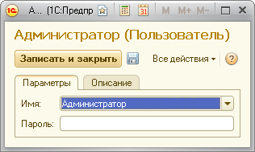

Вы можете запускать виртуальных пользователей от имени какого-то пользователя информационной базы или вообще без имени (если в базе не зарегистрирован ни один пользователь).
В первом случае вам необходимо решить, от имени каких пользователей вы будете выполнять тестирование и описать их в справочнике «Пользователи». Для каждого пользователя необходимо будет выбрать его имя (из списка имен пользователей, зарегистрированных в информационной базе) и (при необходимости) указать его пароль.
